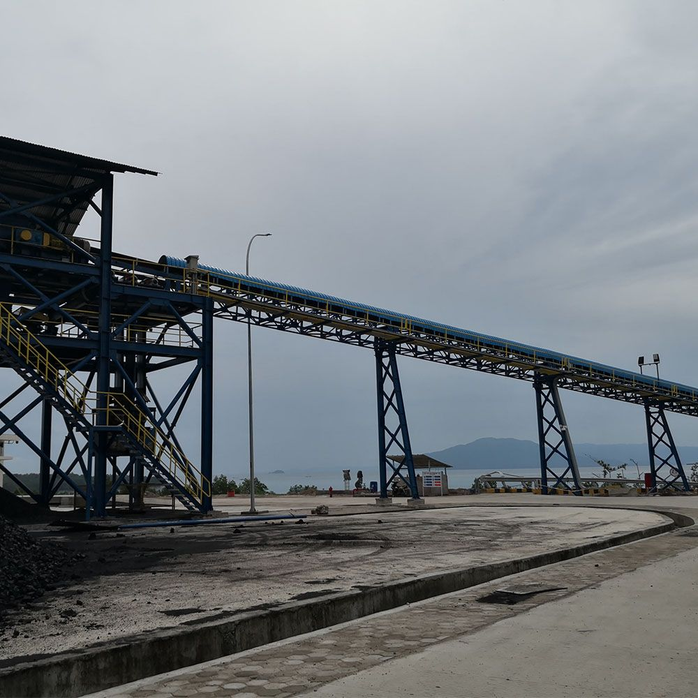

A belt conveyor is one of the simplest pieces of bulk-handling equipment — until it is installed poorly. Most premature belt wear, mis-tracking, and spillage problems trace back to the first week of installation, not to the equipment itself. This guide walks plant engineers and maintenance leads through a field-tested sequence: from foundation survey to first load test.
In this guide
1. Pre-installation preparation 2. Step-by-step installation 3. Commissioning & startup 4. Safety verification 5. First-month maintenance1. Pre-Installation Preparation
Before a single support is placed, confirm that the site matches the approved general arrangement (GA) drawing. Tianyi conveyors are supplied against your capacity, distance, and material data, so the foundation dimensions are specific to your order — do not assume a standard footprint.
- Verify foundations and anchor bolt positions. Check centerline, elevation, and spacing against the drawing with a tolerance of ±5 mm. Wrong anchor positions are the #1 cause of rework.
- Confirm material characteristics. Bulk density, particle size, moisture, and temperature determine belt selection (rubber EP/NN/ST, PVC, PU, heat-resistant, oil-resistant, or flame-retardant). Re-check these against the quote.
- Stage components by sequence. Unpack idlers, pulleys, frames, and the drive unit; keep the belt roll in a shaded, flat area off the ground.
- Tooling readiness. Alignment laser or string line, torque wrench, belt clamp, vulcanizing kit (for hot/cold splicing), and lifting gear rated for the heaviest module.
2. Step-by-Step Installation
2.1 Support structure & pulleys
Set the tail and head pulley frames first, then string a centerline between them. All intermediate support stands must sit on this line. Level the stands and grout the base plates before torquing anchors to specification.
2.2 Idler installation
Troughing idlers (3-roll or 5-roll), flat return idlers, impact idlers at the loading zone, and self-aligning idlers should be fitted in the correct order. Self-aligning idlers are placed every 10–15 m and at both ends of horizontal curves — they are your first defense against mis-tracking.
2.3 Belt placement & splicing
Thread the belt and pull it around the pulleys. For fabric belts, use a certified vulcanized (hot or cold) splice; for steel-cord belts, only a vulcanized splice meets the mechanical load. A poorly made splice is a permanent weak point — verify peel and shear test samples if possible.
2.4 Drive & take-up
Mount the drive motor, gearbox, and coupling. Set the take-up (screw, winch, or gravity) so the belt has enough tension to avoid slip at the drive pulley but not so much that it overloads the bearings. Belt speed on Tianyi units typically runs 0.8–5.0 m/s depending on model.

Belt Conveyor3. Commissioning & Startup
Commissioning is a staged process. Never load material on day one.
- Visual & torque check. Re-torque all fasteners, confirm guardrails and emergency stops are in place.
- No-load run (30–60 min). Run empty and watch the belt path. It should track within the idler edges. Minor drift is corrected with training idlers, not by forcing the frame.
- Alignment & tension. Check pulley and idler alignment with a laser. Adjust take-up so sag between return idlers is ~1–2% of span.
- Gradual loading. Start at 25% capacity, then 50%, then full over 2–3 shifts. Watch for spillage at the loading zone and belt cleaner performance.
- Load test sign-off. Record amp draw, belt speed, and temperature of bearings. Compare against the nameplate for the drive power range (1.5–500 kW on Tianyi models).
| Model series | Belt width | Capacity | Max inclination |
|---|---|---|---|
| TD75 / DTII / DTII(A) / DX | 500–2000 mm | 45–2,000 t/h | 18° (28° chevron) |
4. Safety Verification
- All rotating parts (pulleys, coupling, take-up) enclosed with guards.
- Pull-cord emergency stops accessible along the full length, tested.
- Belt misalignment switches, speed monitors, and (if specified) rip detection and bearing-temperature sensors wired to the control system.
- Lockout/tagout (LOTO) procedure documented for maintenance crews.
5. First-Month Maintenance
The first 30 days decide the belt's service life. Build this routine:
- Daily: Inspect belt edges for fraying, check cleaners are removing carry-back, listen for abnormal idler noise.
- Weekly: Re-torque take-up, verify tracking, check for material buildup on return idlers (a common mis-tracking cause).
- Monthly: Grease bearings per schedule, inspect splice condition, measure belt drift trend.
Because Tianyi conveyors use standardized idlers, pulleys, and drives, spare sourcing is straightforward. Keep a small critical-spare kit (2–3 idlers per size, one scraper blade, one set of bearings) on site to avoid unplanned downtime.
Planning a New Conveyor Line?
Send us your material type, capacity, conveying distance, and site layout. Our engineering team returns a tailored proposal — including GA drawing and installation supervision — within 24 hours.
Request a Quote